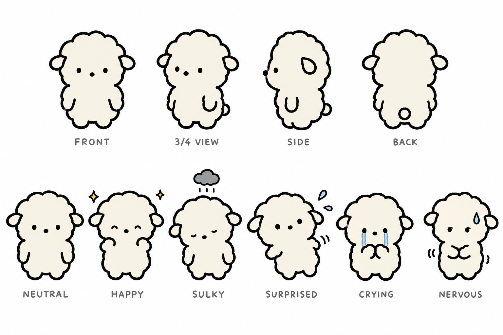
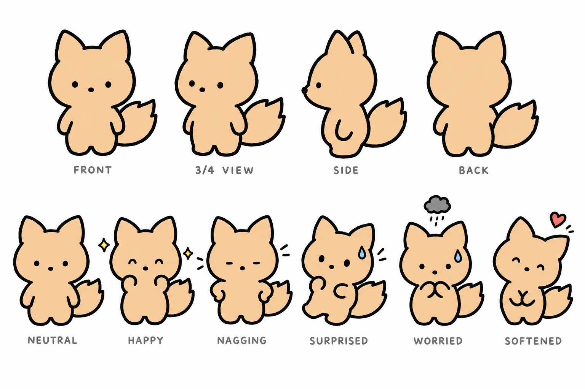
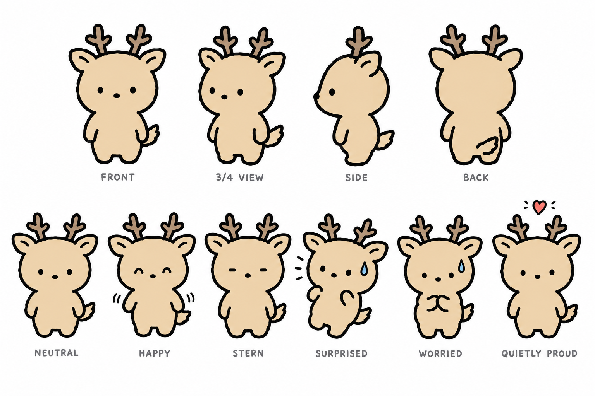
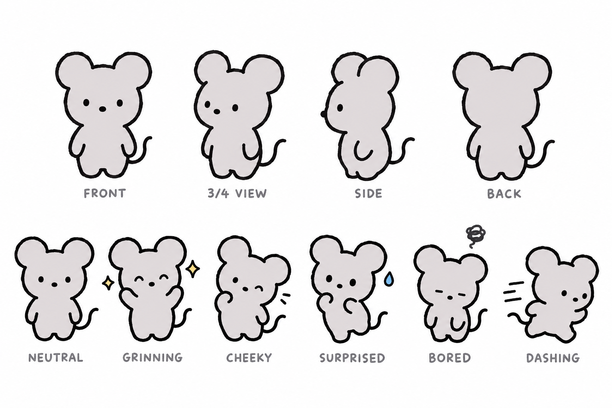
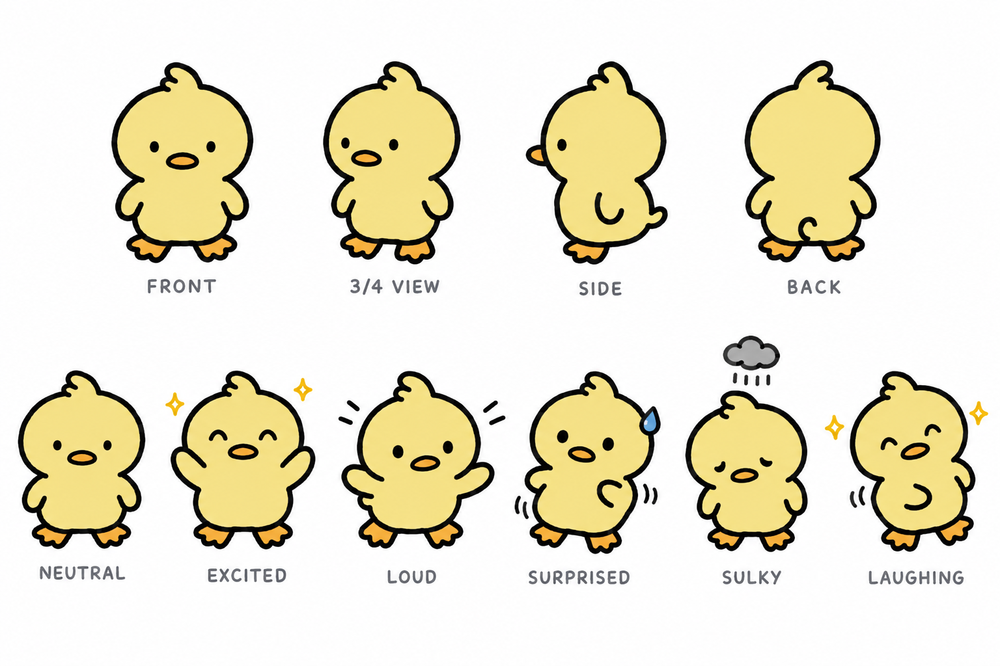
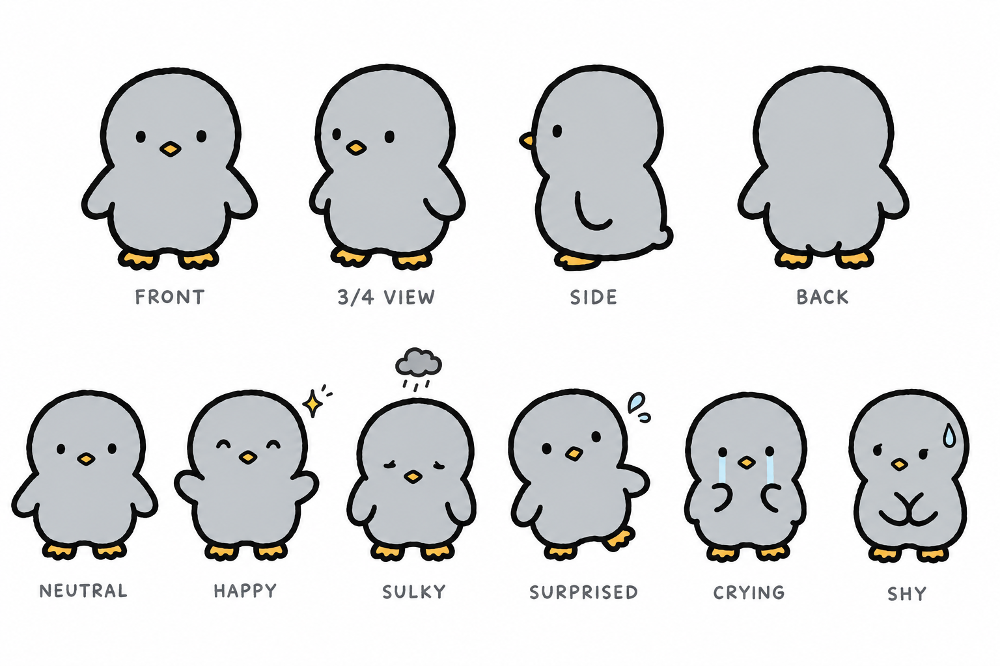
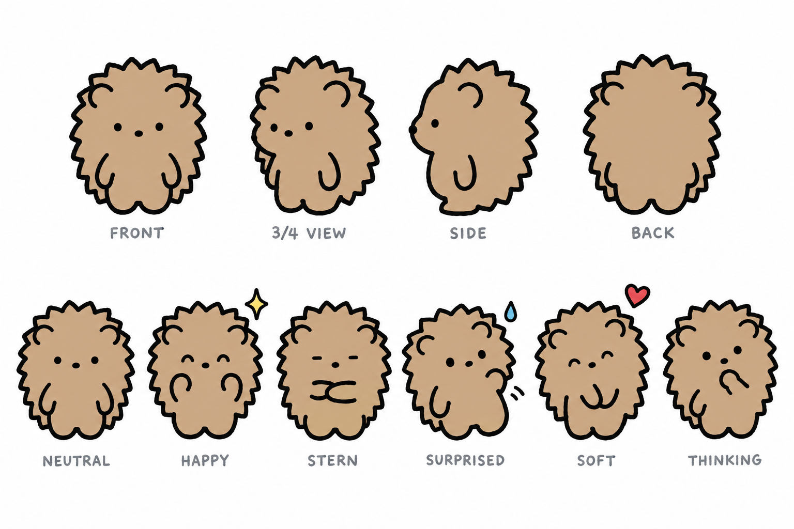

확정 캐스트 시트 7장 + 크기 라인업
gpt-image-2.5-sunburst · high · 1536×1024 · 장당 $0.061 · 참조: 동물 시트 크롭 + 깜자 3장. 모든 시트는 소품 없음(망토 등은 에피소드별 지정).
크기 라인업 (시트 FRONT 도를 잘라 합성, 생성 아님)

역할 기준 크기 (주인공 100): 아빠 110 / 엄마 105 / 남친 105 / 동생·친구 100. 실제 동물 크기와 무관하며, 귀·뿔·털에 영향받지 않도록 눈높이→발끝 거리를 기준으로 맞춘다. python scripts/lineup.py all --out …
동시 출연 참조 예시 — 두부 + 미숙

컷에 나오는 캐릭터만 골라 만든다: python scripts/lineup.py dubu misook --out episodes/epNN/ref/lineup.png → 컷 생성 시 --ref로 시트들과 함께 입력.
두부 — 주인공 · 양

2행: 기본 · 기쁨 · 시무룩 · 놀람 · 눈물 · 긴장(눈치) · 프롬프트 dubu-sheet-prompt.txt
미숙 — 엄마 · 여우 · 1.2배

2행: 기본 · 기쁨 · 잔소리 · 놀람 · 걱정 · 누그러짐 · 프롬프트 misook-sheet-prompt.txt
덕수 — 아빠 · 사슴 · 1.2배

2행: 기본 · 기쁨(절제) · 엄격 · 놀람 · 걱정 · 조용한 뿌듯함 · 프롬프트 deoksu-sheet-prompt.txt
콩 — 남동생 · 쥐 · 0.8배

2행: 기본 · 신남 · 능청 · 놀람 · 지루함 · 돌진 · 프롬프트 kong-sheet-prompt.txt
탱자 — 친구1 · 오리

2행: 기본 · 신남 · 시끄러움 · 놀람 · 시무룩 · 웃음 · 프롬프트 tangja-sheet-prompt.txt
소라 — 친구2 · 펭귄

2행: 기본 · 기쁨(작게) · 시무룩 · 놀람 · 눈물 · 수줍음 · 프롬프트 sora-sheet-prompt.txt
밤톨 — 남친 · 고슴도치 · 1.1배

2행: 기본 · 기쁨 · 엄격 · 놀람 · 부드러움 · 생각 · 프롬프트 bamtol-sheet-prompt.txt